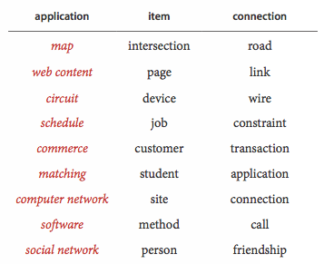

Overview
Pairwise connections between items play a critical role in a vast array of computational applications. The relationships implied by these connections lead to a host of natural questions: Is there a way to connect one item to another by following the connections? How many other items are connected to a given item? What is the shortest chain of connections between this item and this other item? The table below illustrates the diversity of applications that involve graph processing.

We progress through the four most important types of graph models: undirected graphs (with simple connections), digraphs graphs (where the direction of each connection is significant), edge-weighted graphs (where each connection has an software associated weight), and edge-weighted digraphs (where each connection has both a direction and a weight).
-
4.1Undirected Graphs introduces the graph data type, including depth-first search and breadth-first search.
-
4.2Directed Graphs introduces the digraph data type, including topological sort and strong components.
-
4.3Minimum Spanning Trees describes the minimum spanning tree problem and two classic algorithms for solving it: Prim and Kruskal.
-
4.4Shortest Paths introduces the shortest path problem and two classic algorithms for solving it: Dijkstra's algorithm and Bellman-Ford.
Java programs in this chapter.
Below is a list of Java programs in this chapter. Click on the program name to access the Java code; click on the reference number for a brief description; read the textbook for a full discussion.
| REF | PROGRAM | DESCRIPTION / JAVADOC |
|---|---|---|
| - | Graph.java | undirected graph |
| - | GraphGenerator.java | generate random graphs |
| - | DepthFirstSearch.java | depth-first search in a graph |
| - | NonrecursiveDFS.java | DFS in a graph (nonrecursive) |
| 4.1 | DepthFirstPaths.java | paths in a graph (DFS) |
| 4.2 | BreadthFirstPaths.java | paths in a graph (BFS) |
| 4.3 | CC.java | connected components of a graph |
| - | Bipartite.java | bipartite or odd cycle (DFS) |
| - | BipartiteX.java | bipartite or odd cycle (BFS) |
| - | Cycle.java | cycle in a graph |
| - | EulerianCycle.java | Eulerian cycle in a graph |
| - | EulerianPath.java | Eulerian path in a graph |
| - | SymbolGraph.java | symbol graph |
| - | DegreesOfSeparation.java | degrees of separation |
| - | Digraph.java | directed graph |
| - | DigraphGenerator.java | generate random digraphs |
| 4.4 | DirectedDFS.java | depth-first search in a digraph |
| - | NonrecursiveDirectedDFS.java | DFS in a digraph (nonrecursive) |
| - | DepthFirstDirectedPaths.java | paths in a digraph (DFS) |
| - | BreadthFirstDirectedPaths.java | paths in a digraph (BFS) |
| - | DirectedCycle.java | cycle in a digraph |
| - | DirectedCycleX.java | cycle in a digraph (nonrecursive) |
| - | DirectedEulerianCycle.java | Eulerian cycle in a digraph |
| - | DirectedEulerianPath.java | Eulerian path in a digraph |
| - | DepthFirstOrder.java | depth-first order in a digraph |
| 4.5 | Topological.java | topological order in a DAG |
| - | TopologicalX.java | topological order (nonrecursive) |
| - | TransitiveClosure.java | transitive closure |
| - | SymbolDigraph.java | symbol digraph |
| 4.6 | KosarajuSharirSCC.java | strong components (Kosaraju–Sharir) |
| - | TarjanSCC.java | strong components (Tarjan) |
| - | GabowSCC.java | strong components (Gabow) |
| - | EdgeWeightedGraph.java | edge-weighted graph |
| - | Edge.java | weighted edge |
| - | LazyPrimMST.java | MST (lazy Prim) |
| 4.7 | PrimMST.java | MST (Prim) |
| 4.8 | KruskalMST.java | MST (Kruskal) |
| - | BoruvkaMST.java | MST (Boruvka) |
| - | EdgeWeightedDigraph.java | edge-weighted digraph |
| - | DirectedEdge.java | weighted, directed edge |
| 4.9 | DijkstraSP.java | shortest paths (Dijkstra) |
| - | DijkstraUndirectedSP.java | undirected shortest paths (Dijkstra) |
| - | DijkstraAllPairsSP.java | all-pairs shortest paths |
| 4.10 | AcyclicSP.java | shortest paths in a DAG |
| - | AcyclicLP.java | longest paths in a DAG |
| - | CPM.java | critical path method |
| 4.11 | BellmanFordSP.java | shortest paths (Bellman–Ford) |
| - | EdgeWeightedDirectedCycle.java | cycle in an edge-weighted digraph |
| - | Arbitrage.java | arbitrage detection |
| - | FloydWarshall.java | all-pairs shortest paths (dense) |
| - | AdjMatrixEdgeWeightedDigraph.java | edge-weighted graph (dense) |